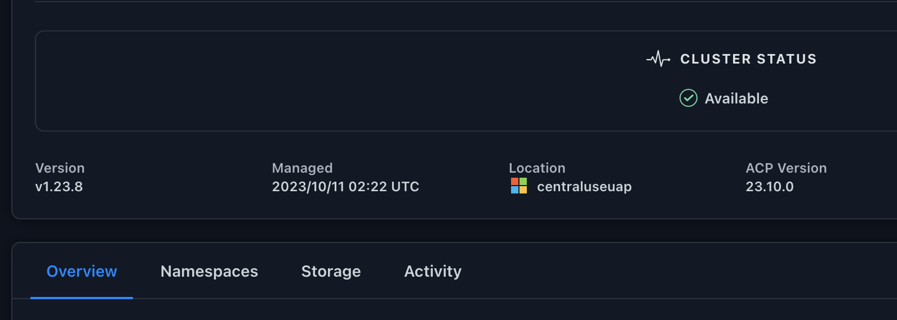

发行说明
发行说明
启用Asta Control配置程序
 建议更改
建议更改
Astra Trident 23.10及更高版本提供了使用Astra Control配置程序的选项、允许获得许可的Astra Control用户访问高级存储配置功能。除了基于标准Asta三端CSI的功能之外、Asta Control配置程序还提供了此扩展功能。
在Asta Control的未来更新中、Asta Control配置程序将取代Asta Trandent、成为Asta Control架构中的存储配置程序和流程编排程序。因此、强烈建议Asta Control用户启用Asta Control配置程序。Asta三元数据将继续保持开源状态、并使用NetApp的新CSI和其他功能进行发布、维护、支持和更新。
如果您是Astra控制中心的许可用户、并且希望使用Astra控制配置程序功能、则应遵循此操作步骤。如果您是Astra三端数据库的用户、并且希望使用Astra Control配置程序提供的其他功能、而不同时使用Astra Control、则还应遵循此操作步骤。
对于每种情况、默认情况下在Astra Trident 23.10中不会启用配置程序功能、但可以使用此过程启用此功能。
如果要启用Asta Control配置程序、请先执行以下操作：
-
获取Astra控制中心许可证：您需要 "Asta Control Center许可证" 启用Astra Control配置程序并访问它提供的功能。
-
安装或升级到Astra Control Center 23.10：如果计划将Astra Control配置程序与Astra Control结合使用，则需要此版本。
-
*确认集群具有一个AMD64*系统架构：Astra Control配置程序映像在amd64和ARM64 CPU架构中都提供，但Astra Control Center仅支持amd64。
-
获取用于注册表访问的Asta Control服务帐户：如果要使用Asta Control注册表而不是NetApp 支持站点 来下载Asta Control配置程序映像、请完成的注册 "Asta Control Service帐户"。填写并提交表单并创建BlueXP帐户后、您将收到Astra Control Service欢迎电子邮件。
-
如果您安装了Astra三端安装程序，请确认其版本在四个版本的窗口内：如果您的Astra三端安装程序在23.10版本的四个版本窗口内，则可以使用Astra Control置备程序直接升级到Astra三端安装程序23.10。例如、您可以直接从Asta三端到22.10升级到23.10。
-
获取Astra控制中心许可证：您需要 "Asta Control Center许可证" 启用Astra Control配置程序并访问它提供的功能。
-
如果您安装了Astra三端安装程序，请确认其版本在四个版本的窗口内：如果您的Astra三端安装程序在23.10版本的四个版本窗口内，则可以使用Astra Control置备程序直接升级到Astra三端安装程序23.10。例如、您可以直接从Asta三端到22.10升级到23.10。
-
获取Astra Control Service帐户以访问注册表：您需要访问注册表才能下载Astra Control配置程序映像。要开始使用、请完成的注册 "Asta Control Service帐户"。填写并提交表单并创建BlueXP帐户后、您将收到Astra Control Service欢迎电子邮件。
(步骤1)下载并提取Astra Control配置程序
Astra控制中心用户可以使用NetApp 支持站点 或Astra控制注册表方法下载映像。要在不使用Astra Control的情况下使用Astra Control配置程序的Astra Trent用户应使用注册表方法。
(选项) NetApp 支持站点
-
下载Asta Control配置程序包 (
trident-acp-[version].tar) "Astra Control Center下载页面"。 -
(建议但可选)下载Astra Control Center的证书和签名捆绑包(astra-control-crier-certs -[version].tar.gz)、以验证trident - acp-[version] tar捆绑包的签名。
展开以查看详细信息
tar -vxzf astra-control-center-certs-[version].tar.gzopenssl dgst -sha256 -verify certs/AstraControlCenterDockerImages-public.pub -signature certs/trident-acp-[version].tar.sig trident-acp-[version].tar -
加载Asta Control配置程序映像：
docker load < trident-acp-23.10.0.tar响应：
Loaded image: trident-acp:23.10.0-linux-amd64
-
标记图像：
docker tag trident-acp:23.10.0-linux-amd64 <my_custom_registry>/trident-acp:23.10.0 -
将映像推送到自定义注册表：
docker push <my_custom_registry>/trident-acp:23.10.0
(选项) Astra Control映像注册表

|
在此操作步骤中、您可以使用Podman而不是Docker执行命令。如果您使用的是Windows环境、建议使用PowerShell。 |
-
访问NetApp Astra控件映像注册表：
-
登录到Astra Control Service Web UI、然后选择页面右上角的图图标。
-
选择* API访问*。
-
记下您的帐户ID。
-
在同一页面中，选择*Generate API t令牌*并将API令牌字符串复制到剪贴板，然后将其保存在编辑器中。
-
使用您的首选方法登录Astra Control注册表：
docker login cr.astra.netapp.io -u <account-id> -p <api-token>crane auth login cr.astra.netapp.io -u <account-id> -p <api-token>
-
-
如果您有自定义注册表、请按照以下步骤操作、以便使用首选方法将映像移动到自定义注册表。如果您不使用注册表、请按照中的三端修复操作符步骤进行操作 "下一节"。
以下命令可以使用Podman、而不是Docker。如果您使用的是Windows环境、建议使用PowerShell。 Docker-
从注册表中提取Asta Control配置程序映像：
提取的映像不支持多个平台、只支持与提取映像的主机相同的平台、例如Linux amd64。 docker pull cr.astra.netapp.io/astra/trident-acp:23.10.0 --platform <cluster platform>示例
docker pull cr.astra.netapp.io/astra/trident-acp:23.10.0 --platform linux/amd64
-
标记图像：
docker tag cr.astra.netapp.io/astra/trident-acp:23.10.0 <my_custom_registry>/trident-acp:23.10.0 -
将映像推送到自定义注册表：
docker push <my_custom_registry>/trident-acp:23.10.0
起重机-
将Asta Control配置程序清单复制到自定义注册表：
crane copy cr.astra.netapp.io/astra/trident-acp:23.10.0 <my_custom_registry>/trident-acp:23.10.0
-
(第2步)在Asta Trdent中启用Asta Control配置程序
确定原始安装方法是否使用 并根据原始方法完成相应的步骤。

|
请勿使用Helm启用Asta Control配置程序。如果您在初始安装中使用Helm、并且要升级到23.10、则需要使用啮合式操作符或tridentcdl来启用Asta Control配置程序。 |
-
如果您尚未安装Astra三端安装程序、或者您从初始Astra三端安装程序中删除了操作员、请完成以下步骤：
-
创建客户需求日：
kubectl create -f deploy/crds/trident.netapp.io_tridentorchestrators_crd_post1.16.yaml -
创建三项命名空间 (
kubectl create namespace trident)或确认三项命名空间仍然存在 (kubectl get all -n trident）。如果已删除此命名空间、请重新创建它。
-
-
将Astra Trdent更新为23.10.0：
对于运行Kubornetes 1.24或更早版本的集群、请使用 bundle_pre_1_25.yaml。对于运行Kubernetes 1.25或更高版本的集群、请使用bundle_post_1_25.yaml。kubectl -n trident apply -f trident-installer-23.10.0/deploy/<bundle-name.yaml> -
验证Astra trident是否正在运行：
kubectl get torc -n trident响应：
NAME AGE trident 21m
-
如果您有一个使用机密的注册表，请创建一个用于提取Astra Control置备程序映像的密钥：
kubectl create secret docker-registry <secret_name> -n trident --docker-server=<my_custom_registry> --docker-username=<username> --docker-password=<token> -
编辑TridentOrchestrator CR并进行以下编辑：
kubectl edit torc trident -n trident-
为Astra三端映像设置自定义注册表位置或从Astra Control注册表中提取该映像 (
tridentImage: <my_custom_registry>/trident:23.10.0或tridentImage: netapp/trident:23.10.0）。 -
启用Asta Control配置程序 (
enableACP: true）。 -
设置Asta Control配置程序映像的自定义注册表位置或将其从Asta Control注册表中提取 (
acpImage: <my_custom_registry>/trident-acp:23.10.0或acpImage: cr.astra.netapp.io/astra/trident-acp:23.10.0）。 -
如果您已建立 图像拉取密钥 在本操作步骤的前面部分、您可以在此处设置它们 (
imagePullSecrets: - <secret_name>）。使用您在前面步骤中创建的相同名称机密名称。
apiVersion: trident.netapp.io/v1 kind: TridentOrchestrator metadata: name: trident spec: debug: true namespace: trident tridentImage: <registry>/trident:23.10.0 enableACP: true acpImage: <registry>/trident-acp:23.10.0 imagePullSecrets: - <secret_name>
-
-
保存并退出文件。部署过程将自动开始。
-
验证是否已创建操作员、部署和副本集。
kubectl get all -n trident
在 Kubernetes 集群中只能有 * 一个操作符实例 * 。请勿创建多个部署的Asta三端操作员。 -
验证
trident-acp容器正在运行acpVersion为23.10.0状态为Installed：kubectl get torc -o yaml响应：
status: acpVersion: 23.10.0 currentInstallationParams: ... acpImage: <registry>/trident-acp:23.10.0 enableACP: "true" ... ... status: Installed
-
在启用Asta Control配置程序的情况下安装Asta Trent (
--enable-acp=true）：./tridentctl -n trident install --enable-acp=true --acp-image=mycustomregistry/trident-acp:23.10 -
确认已启用Asta Control配置程序：
./tridentctl -n trident version响应：
+----------------+----------------+-------------+ | SERVER VERSION | CLIENT VERSION | ACP VERSION | +----------------+----------------+-------------+ | 23.10.0 | 23.10.0 | 23.10.0. | +----------------+----------------+-------------+
结果
Asta Control配置程序功能已启用、您可以使用当前运行的版本可用的任何功能。
(仅适用于Asta Control Center用户)安装Asta Control配置程序后、在Asta Control Center UI中托管此配置程序的集群将显示 ACP version 而不是 Trident version 字段和当前安装的版本号。
